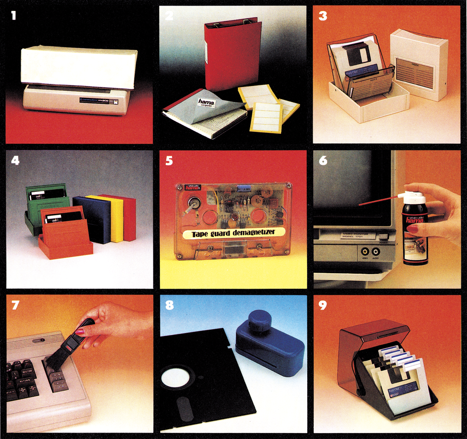
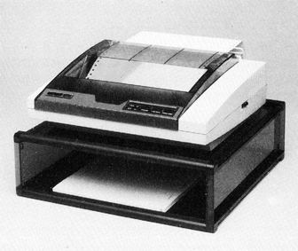
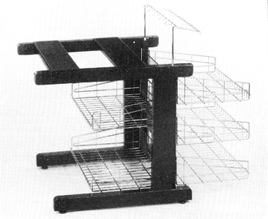
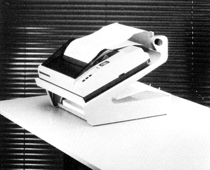
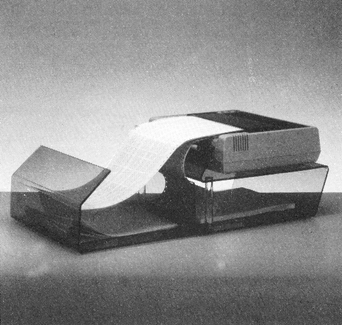
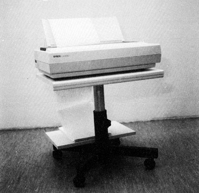

Druckermöbel
Wer zum Kreise der Druckerbesitzer gehört, kennt die Schwierigkeiten, die mit dem reibungslosen Papiereinzug verbunden sind. Die Lösung für räumliche Probleme mit Druckern sind spezielle Druckermöbel.

Ein häufig auftauchendes Problem beim Einsatz eines Druckers stellt der korrekte Einzug und die Ausgabe des Endlospapiers dar. Da das Papier automatisch angezogen und ausgegeben wird, sollte kein Hindernis (zum Beispiel eine scharfe Tischkante oder auch Versorgungskabel) den Papiertransport behindern. Sofern der Platz nicht ausreicht, um den Drucker möglichst nahe »am Ort des Geschehens« zu betreiben, kommt die Anschaffung eines Druckerständers oder -tisches in Betracht. Sie gewährleisten auch bei umfangreichen Ausdrucken (zum Beispiel bei Serienbriefen), daß das Papier oder die Etiketten korrekt eingezogen werden und bieten — je nach Ausführung — gleichzeitig Ablagemöglichkeit für die bereits erstellten Schriftstücke. Wem der Anblick von ausgerissenen Perforationslöchern (und einer dick bedruckten Zeile) oder auch der gleichzeitige »Einsatz« von bereits bedrucktem und unbedruckten Papiers in der Walze nicht unbekannt ist, wird sicher schon mit dem Kauf von speziellen Druckerständern geliebäugelt haben. Aber auch Phantasie und handwerkliche Geschicklichkeit des Druckerbesitzers lassen sich auf diesem Gebiet unter Beweis stellen.
Letzendlich wird es sowohl von der Brieftasche, als auch der wohnlichen Umgebung des Anwenders abhängen, für welche Lösung er sich entscheidet: Kauf eines formschönen Druckerständers oder -tisches beziehungsweise Selbstbau mit einfachsten Mitteln.
In der folgenden Übersicht sind die gängigsten Varianten von Druckerständern und -tischen bis zur Preisgrenze von 400 Mark zusammengefaßt. Die Marktübersicht basiert auf einer schriftlichen Umfrage bei den Anbietern; berücksichtigt sind Angaben, die bis zum Redaktionsschluß vorlagen. Die Kontaktadressen der Anbieter sind dem Info zu entnehmen.





| Anbieter | Produktbezeichnung | Bemerkung/Besonders geeignet Für Drucker mit Zeichenbreite | Tisch (T), Ständer (S), Breite x Tiefe x Höhe in Zentimeter | Papiermenge Zufuhr/Ablage | Preis in DM inklusive Mehrwertsteuer |
|---|---|---|---|---|---|
| C.E.S. | EO-Table 03 | 80 | T 80 x 60 x 76 | 2000/2000 | 385,— |
| Computer Links | Drucker-Plattform | 80 | T 42 x 40 x 130 | 1000/Keine | 105,— |
| Dazu | DBORD | 80 | S 40 x 35 x 9,5 | 500/Keine | 82,— |
| PBOX mit PBOY | 80 | S 40 x 35 x 95 | 500/500 | 273,— | |
| PBOX mit PBOY | 136 | S 60 x 40 x 95 | 500/500 | 392,— | |
| Didas Computer | ERGOTAB 88 | 80 | S 40 x 38 x 27 | 700/Keine | 364,— |
| ERGOTAB 89 | 132 | S keine Angaben | 700/Keine | 399,— | |
| Epson | Acrylglas-Mehrzweckständer | 80 | S keine Angaben | 500/Keine | 129,— |
| Acrylglas-Mehrzweckständer | 132 | S keine Angaben | 500/Keine | 159,— | |
| Hewlett Packard | Untersatz | 80 | S 38 x 35,5 x 8,5 | 500/Keine | 187,— |
| Kontron | Druckerplattform | Für Drucker bis 42 cm | S 42 x 40 x 13 | 1000/Keine | 99,— |
| Druckerplattform | Für Drucker bis 52 cm | S 52 x 40 x 13 | 1000/Keine | 112,— | |
| Druckerplattform | Für Drucker bis 62 cm | S 62 x 40 x 13 | 1000/Keine | 165,— | |
| Mannesmann Tally | Druckerständer | 80 | S 50 x 10 x 35 | 2000/Keine | 175,— |
| Media Plast | Druckerständer | Für Drucker aus dem Heimcomputerbereich | S 40 x 35 x 11 | 1500/Keine | 89,— |
| Mirwald | Ergoprint 80 | 80 | S 40 x 32 x 11 | 700/Keine | 119,— |
| Ergoprint 132 | 132 | S 58 x 32 x 11 | 700/Keine | 139,— | |
| Printhek 80 | 80 | T 40 x 41 x 65 | 2000/Keine | 375,— | |
| Misco | Micro Fold Printer Stand | 80 | S 39,5 x 44,5 x 37 | 500/200 | 270,— |
| Micro Fold Printer Stand | 132 | S 52 x 44,5 x 37 | 500/200 | 304,— | |
| Bottom-Feed | 80 | S 39 x 33 x 13 | 800/Keine | 167,— | |
| Bottom-Feed | 132 | S 54 x 33 x 13 | 800/Keine | 190,— | |
| Tisch-Drucker-Ständer | 80 | S 37 x 20 x 44 | 1000/1000 | 251,— | |
| Multiform | Druckerplattform | Für Drucker bis 42 cm | S 42 x 40 x 13 | 1000/Keine | 105,— |
| Druckerplattform | Für Drucker bis 52 cm | S 52 x 40 x 13 | 1000/Keine | 139,— | |
| Druckerplattform | Für Drucker bis 62 cm | S 62 x 40 x 13 | 1000/Keine | 179,— | |
| Triadex | Druckertisch | 80/132 | T 70 x 69 x 70,5 | Beliebig/4000 | 342,— |
Info
C.E.S., Am Moosfeld 37, 8000 München 82, Tel. 0 89/ 42 04 30
Computer Links GmbH, Rosenkavalierplatz 12, 8000 München 81, Tel. 0 89/9190 47
Dazu Vertrieb GmbH, Hans-Henny-Jahnn-Weg 41-45, 2000 Hamburg 76, Tel. 040/2201965
Didas Computer GmbH, Hans-Pinsel-Str. 1, 8013 Haar, Tel. 0 89/46 40 61
Epson Deutschland GmbH, Zülpicher Str. 6, 4000 Düsseldorf 11, Tel. 0211/5603-0
Hewlett Packard, Herrenbergerstr. 130, 7030 Böblingen, Tel. 07031/140
Kontron Computerperipherie, Freisinger Str. 21, 8057 Eching, Tel.08165/707-110
Mannesmann Tally, Bottroper Str. 10, 7000 Stuttgart 50, Tel. 0711/503 92 29
Media Plast, Lübecker Str. 32, 4600 Dortmund 1, Tel. 02 31/52 78 45
Mirwald Electronic GmbH, Fasanenstr. 8, 8025 Unterhaching, Tel. 089/6112040
Misco EDV-Zubehör GmbH, Nordendstr. 72-74, 6082
Mörfelden-Walldorf, Tel. 06105/4010
MmV GmbH & Co. KG, Tal 18, 8000 München 2, Tel. 089/22 96 26
Multiform Vertrieb GmbH & CoKG, Sollingweg 19, 4950 Minden, Tel. 05 71/4 60 48
Triadex GmbH, Behringstr. 5, 8752 Mainaschaff, Tel. 0 60 21/72 25